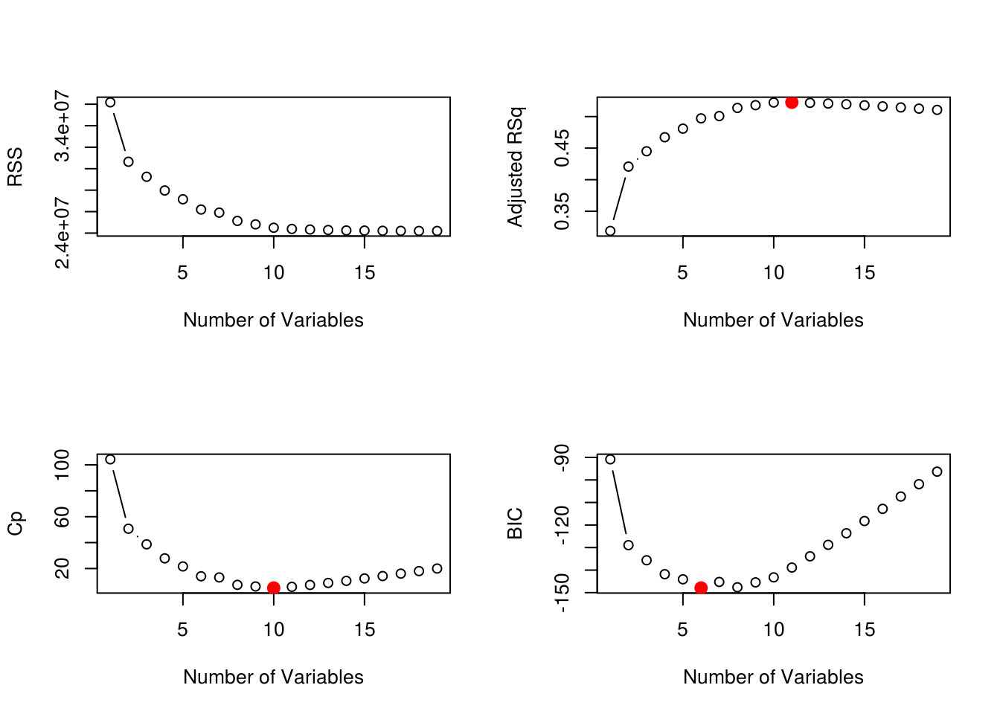
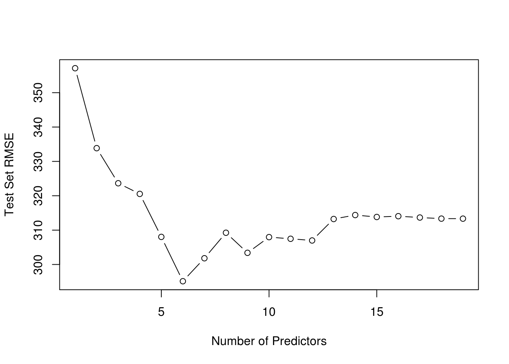
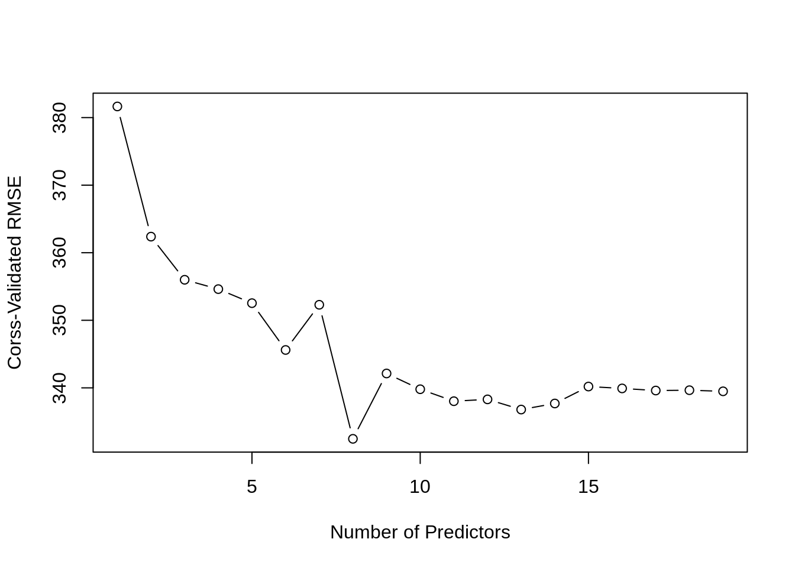

Chapter 22 Subset Selection
Instructor’s Note: This chapter is currently missing the usual narrative text. Hopefully it will be added later.
## [1] 59## [1] 59## [1] 022.1 AIC, BIC, and Cp
22.1.2 Best Subset
## Subset selection object
## Call: regsubsets.formula(Salary ~ ., Hitters)
## 19 Variables (and intercept)
## Forced in Forced out
## AtBat FALSE FALSE
## Hits FALSE FALSE
## HmRun FALSE FALSE
## Runs FALSE FALSE
## RBI FALSE FALSE
## Walks FALSE FALSE
## Years FALSE FALSE
## CAtBat FALSE FALSE
## CHits FALSE FALSE
## CHmRun FALSE FALSE
## CRuns FALSE FALSE
## CRBI FALSE FALSE
## CWalks FALSE FALSE
## LeagueN FALSE FALSE
## DivisionW FALSE FALSE
## PutOuts FALSE FALSE
## Assists FALSE FALSE
## Errors FALSE FALSE
## NewLeagueN FALSE FALSE
## 1 subsets of each size up to 8
## Selection Algorithm: exhaustive
## AtBat Hits HmRun Runs RBI Walks Years CAtBat CHits CHmRun CRuns CRBI
## 1 ( 1 ) " " " " " " " " " " " " " " " " " " " " " " "*"
## 2 ( 1 ) " " "*" " " " " " " " " " " " " " " " " " " "*"
## 3 ( 1 ) " " "*" " " " " " " " " " " " " " " " " " " "*"
## 4 ( 1 ) " " "*" " " " " " " " " " " " " " " " " " " "*"
## 5 ( 1 ) "*" "*" " " " " " " " " " " " " " " " " " " "*"
## 6 ( 1 ) "*" "*" " " " " " " "*" " " " " " " " " " " "*"
## 7 ( 1 ) " " "*" " " " " " " "*" " " "*" "*" "*" " " " "
## 8 ( 1 ) "*" "*" " " " " " " "*" " " " " " " "*" "*" " "
## CWalks LeagueN DivisionW PutOuts Assists Errors NewLeagueN
## 1 ( 1 ) " " " " " " " " " " " " " "
## 2 ( 1 ) " " " " " " " " " " " " " "
## 3 ( 1 ) " " " " " " "*" " " " " " "
## 4 ( 1 ) " " " " "*" "*" " " " " " "
## 5 ( 1 ) " " " " "*" "*" " " " " " "
## 6 ( 1 ) " " " " "*" "*" " " " " " "
## 7 ( 1 ) " " " " "*" "*" " " " " " "
## 8 ( 1 ) "*" " " "*" "*" " " " " " "fit_all = regsubsets(Salary ~ ., data = Hitters, nvmax = 19)
fit_all_sum = summary(fit_all)
names(fit_all_sum)## [1] "which" "rsq" "rss" "adjr2" "cp" "bic" "outmat" "obj"## [1] -90.84637 -128.92622 -135.62693 -141.80892 -144.07143 -147.91690
## [7] -145.25594 -147.61525 -145.44316 -143.21651 -138.86077 -133.87283
## [13] -128.77759 -123.64420 -118.21832 -112.81768 -107.35339 -101.86391
## [19] -96.30412par(mfrow = c(2, 2))
plot(fit_all_sum$rss, xlab = "Number of Variables", ylab = "RSS", type = "b")
plot(fit_all_sum$adjr2, xlab = "Number of Variables", ylab = "Adjusted RSq", type = "b")
best_adj_r2 = which.max(fit_all_sum$adjr2)
points(best_adj_r2, fit_all_sum$adjr2[best_adj_r2],
col = "red",cex = 2, pch = 20)
plot(fit_all_sum$cp, xlab = "Number of Variables", ylab = "Cp", type = 'b')
best_cp = which.min(fit_all_sum$cp)
points(best_cp, fit_all_sum$cp[best_cp],
col = "red", cex = 2, pch = 20)
plot(fit_all_sum$bic, xlab = "Number of Variables", ylab = "BIC", type = 'b')
best_bic = which.min(fit_all_sum$bic)
points(best_bic, fit_all_sum$bic[best_bic],
col = "red", cex = 2, pch = 20)
22.1.3 Stepwise Methods
fit_fwd = regsubsets(Salary ~ ., data = Hitters, nvmax = 19, method = "forward")
fit_fwd_sum = summary(fit_fwd)fit_bwd = regsubsets(Salary ~ ., data = Hitters, nvmax = 19, method = "backward")
fit_bwd_sum = summary(fit_bwd)## (Intercept) AtBat Hits Walks CRBI CWalks
## 109.7873062 -1.9588851 7.4498772 4.9131401 0.8537622 -0.3053070
## DivisionW PutOuts
## -127.1223928 0.2533404## (Intercept) AtBat Hits Walks CRuns CWalks
## 105.6487488 -1.9762838 6.7574914 6.0558691 1.1293095 -0.7163346
## DivisionW PutOuts
## -116.1692169 0.3028847## (Intercept) Hits Walks CAtBat CHits CHmRun
## 79.4509472 1.2833513 3.2274264 -0.3752350 1.4957073 1.4420538
## DivisionW PutOuts
## -129.9866432 0.2366813## [1] 10## (Intercept) AtBat Hits Walks CAtBat CRuns
## 162.5354420 -2.1686501 6.9180175 5.7732246 -0.1300798 1.4082490
## CRBI CWalks DivisionW PutOuts Assists
## 0.7743122 -0.8308264 -112.3800575 0.2973726 0.2831680## (Intercept) AtBat Hits Walks CAtBat CRuns
## 162.5354420 -2.1686501 6.9180175 5.7732246 -0.1300798 1.4082490
## CRBI CWalks DivisionW PutOuts Assists
## 0.7743122 -0.8308264 -112.3800575 0.2973726 0.283168022.2 Validated RMSE
set.seed(42)
num_vars = ncol(Hitters) - 1
trn_idx = sample(c(TRUE, FALSE), nrow(Hitters), rep = TRUE)
tst_idx = (!trn_idx)
fit_all = regsubsets(Salary ~ ., data = Hitters[trn_idx, ], nvmax = num_vars)
test_mat = model.matrix(Salary ~ ., data = Hitters[tst_idx, ])
test_err = rep(0, times = num_vars)
for (i in seq_along(test_err)) {
coefs = coef(fit_all, id = i)
pred = test_mat[, names(coefs)] %*% coefs
test_err[i] <- sqrt(mean((Hitters$Salary[tst_idx] - pred) ^ 2))
}
test_err## [1] 451.5144 415.2496 410.1213 384.0785 377.2735 408.6423 377.8263 392.0436
## [9] 394.8037 400.7555 402.4398 403.6991 404.0057 407.3175 406.6637 406.2891
## [17] 407.1439 406.9280 407.4385
## [1] 5## (Intercept) Walks CAtBat CHits CHmRun PutOuts
## 102.0163457 3.7019974 -0.4002084 1.5041824 2.9007854 0.1975283## [1] "regsubsets"predict.regsubsets = function(object, newdata, id, ...) {
form = as.formula(object$call[[2]])
mat = model.matrix(form, newdata)
coefs = coef(object, id = id)
xvars = names(coefs)
mat[, xvars] %*% coefs
}num_folds = 5
num_vars = 19
set.seed(1)
folds = caret::createFolds(Hitters$Salary, k = num_folds)
fold_error = matrix(0, nrow = num_folds, ncol = num_vars,
dimnames = list(paste(1:5), paste(1:19)))
for(j in 1:num_folds) {
train_fold = Hitters[-folds[[j]], ]
validate_fold = Hitters[ folds[[j]], ]
best_fit = regsubsets(Salary ~ ., data = train_fold, nvmax = 19)
for (i in 1:num_vars) {
pred = predict(best_fit, validate_fold, id = i)
fold_error[j, i] = rmse(actual = validate_fold$Salary,
predicted = pred)
}
}
cv_error = apply(fold_error, 2, mean)
cv_error## 1 2 3 4 5 6 7 8
## 381.6473 362.3809 355.9959 354.6139 352.5358 345.6078 352.2963 332.4575
## 9 10 11 12 13 14 15 16
## 342.1292 339.7967 338.0266 338.2973 336.7897 337.6876 340.1955 339.9188
## 17 18 19
## 339.6058 339.6544 339.4893
fit_all = regsubsets(Salary ~ ., data = Hitters, nvmax = num_vars)
coef(fit_all, which.min(cv_error))## (Intercept) AtBat Hits Walks CHmRun CRuns
## 130.9691577 -2.1731903 7.3582935 6.0037597 1.2339718 0.9651349
## CWalks DivisionW PutOuts
## -0.8323788 -117.9657795 0.290843122.4 RMarkdown
The RMarkdown file for this chapter can be found here. The file was created using R version 4.0.2 and the following packages:
- Base Packages, Attached
## [1] "stats" "graphics" "grDevices" "utils" "datasets" "methods"
## [7] "base"- Additional Packages, Attached
## [1] "leaps"- Additional Packages, Not Attached
## [1] "tidyselect" "xfun" "purrr" "reshape2" "splines"
## [6] "lattice" "colorspace" "vctrs" "generics" "htmltools"
## [11] "stats4" "yaml" "survival" "prodlim" "rlang"
## [16] "ModelMetrics" "pillar" "glue" "withr" "foreach"
## [21] "lifecycle" "plyr" "lava" "stringr" "timeDate"
## [26] "munsell" "gtable" "recipes" "codetools" "evaluate"
## [31] "knitr" "caret" "class" "Rcpp" "scales"
## [36] "ipred" "ggplot2" "digest" "stringi" "bookdown"
## [41] "dplyr" "grid" "tools" "magrittr" "tibble"
## [46] "crayon" "pkgconfig" "ellipsis" "MASS" "Matrix"
## [51] "data.table" "pROC" "lubridate" "gower" "rmarkdown"
## [56] "iterators" "R6" "rpart" "nnet" "nlme"
## [61] "compiler"